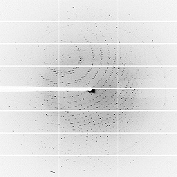

Welcome to ISPyB
ISPyB is a Laboratory Information Management System (LIMS) combining sample tracking and experiment reporting at synchrotron beamlines. It has been in production for many years, and is structured so as to make development and maintenance easy for software teams.
It was initially developed through a joint ESRF/e-HTPX initiative in 2003.
In 2017, a collaboration agreement has been signed for the development of ISPyB between the major synchrotron facilities in Europe.
Today ISPyB is actively supported by the following partners: ESRF, Soleil, DLS, MAX IV, HZB, EMBL, Global Phasing Ltd, DESY, ALBA.
Select the technique you are interested in:
|  |  |